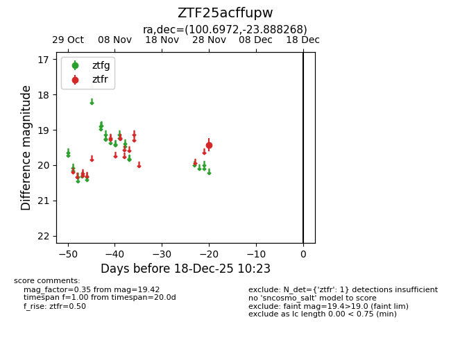
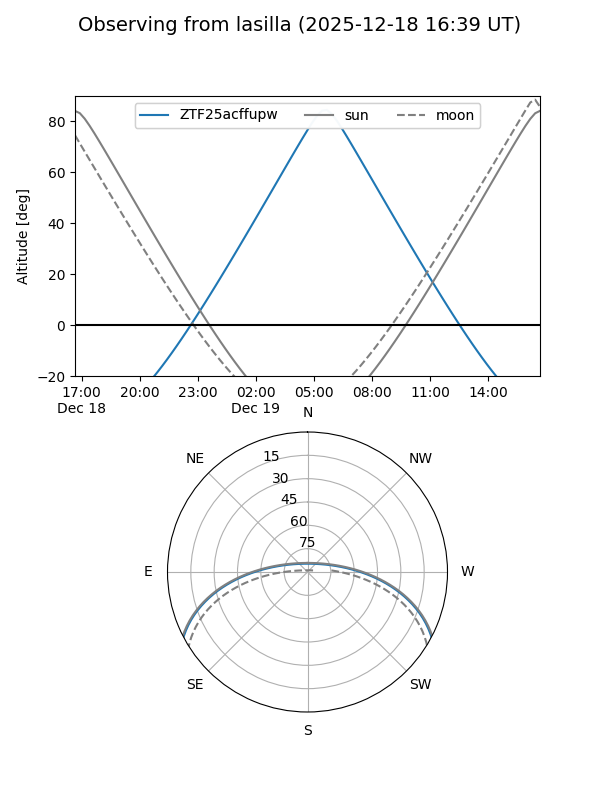
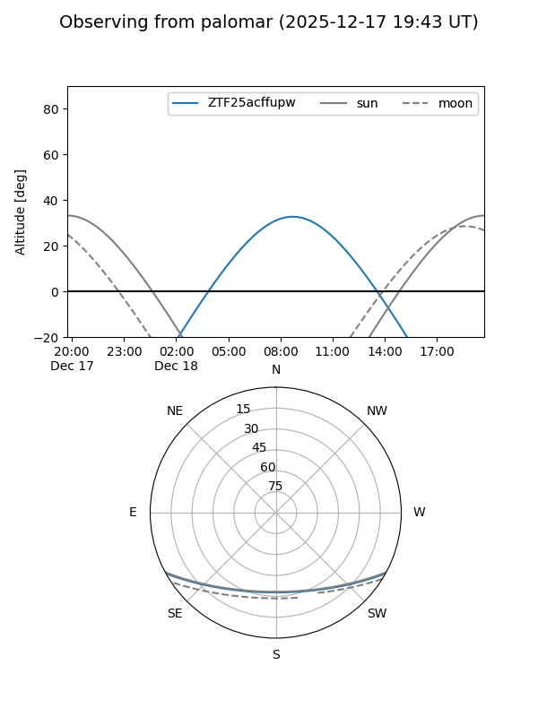

ZTF25acffupw
Target ZTF25acffupw at 2025-12-18 11:17
Aliases and brokers:
FINK: fink-portal.org/ZTF25acffupw
Lasair: lasair-ztf.lsst.ac.uk/objects/ZTF25acffupw
ALeRCE: alerce.online/object/ZTF25acffupw
alt names
ZTF25acffupw (ztf,fink_ztf)
Coordinates:
equatorial (ra, dec) = 100.6972,-23.88827
equatorial (HMS+DMS) = 06:42:47.33,-23:53:17.76
galactic (l, b) = (233.6001,-12.43638)
Photometry
last ztfr=19.42
1 ztfr detections
Lightcurve

Visibility


Additional plots